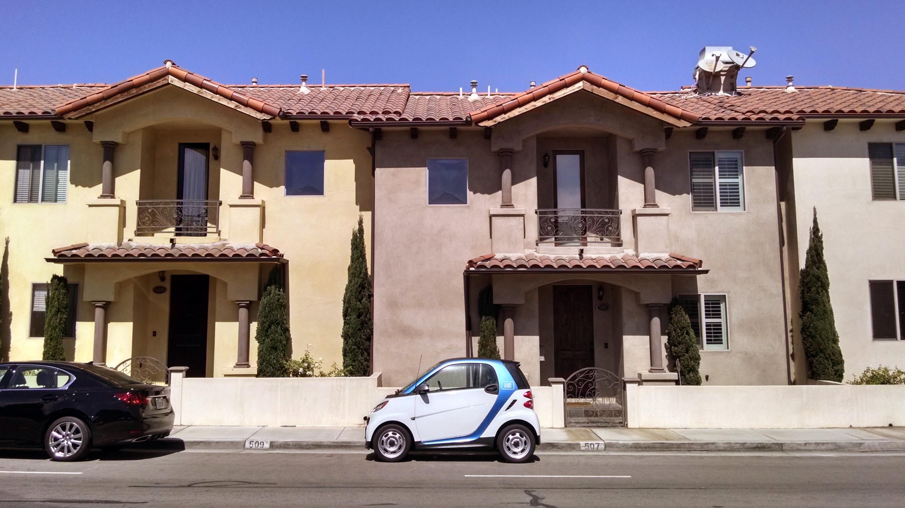
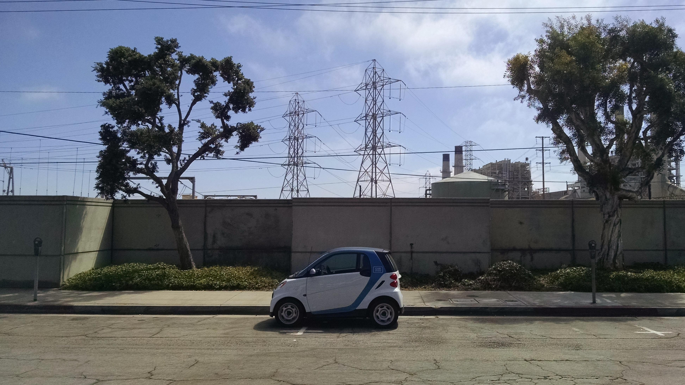
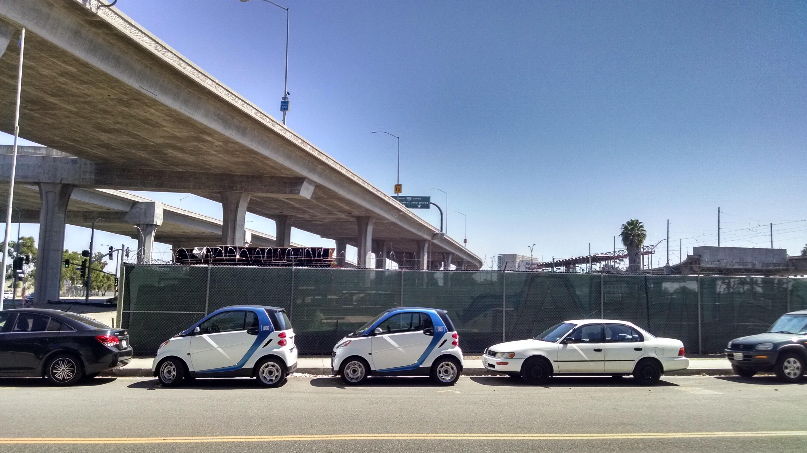
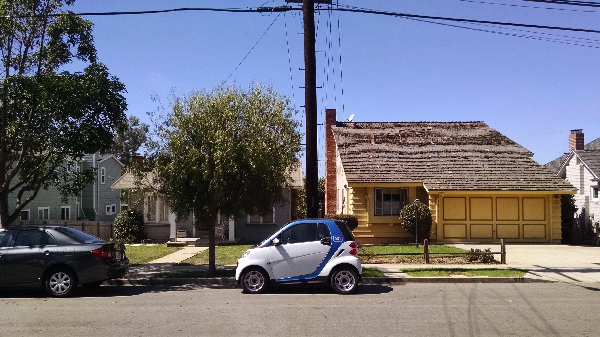
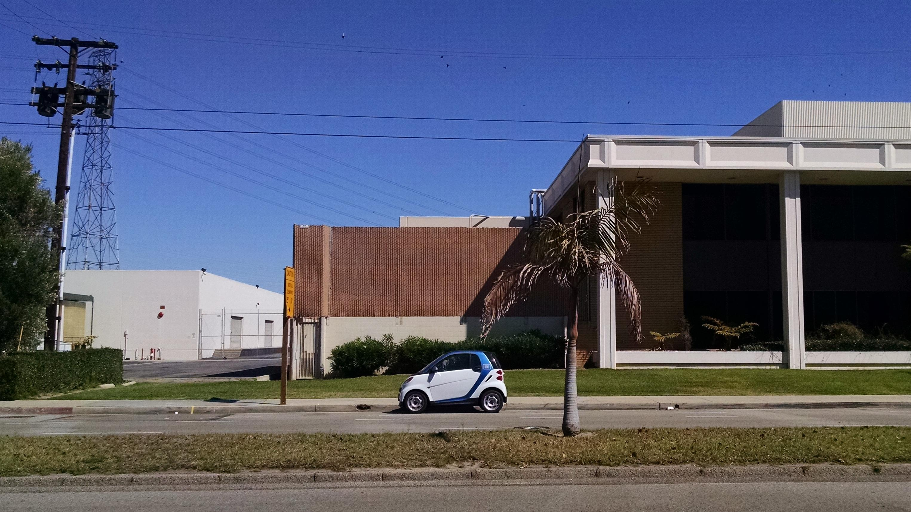
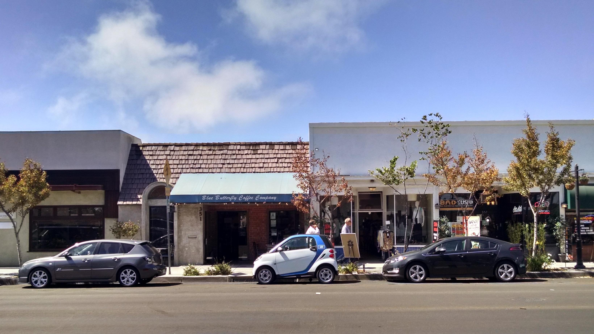

How - Photography
Car2Go can be used in a unique way. Since cars can be left in any legal parking space, users simply find a car near them using an app, drive to their destination, and leave the car wherever they are going.
To illustrate this, I photographed car2go cars in various locations in the South Bay area of Los Angeles County. Every location shown here is a legal place to leave a car2go.
     All photos by and © Lucas Smith